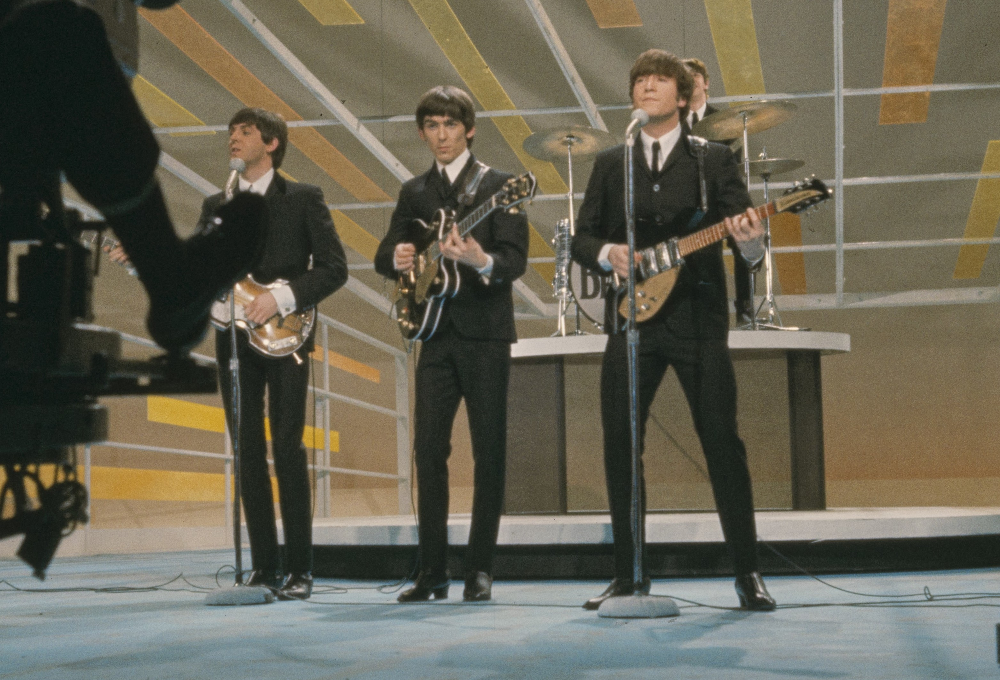

A Debut Show!
The Beatles’ American debut on The Ed Sullivan Show stands as one of the most iconic moments in the history of popular culture. On February 9, 1964, four young men from Liverpool—John Lennon, Paul McCartney, George Harrison, and Ringo Starr—appeared on American television for the first time, sending shockwaves through the nation and solidifying their place as global superstars.
